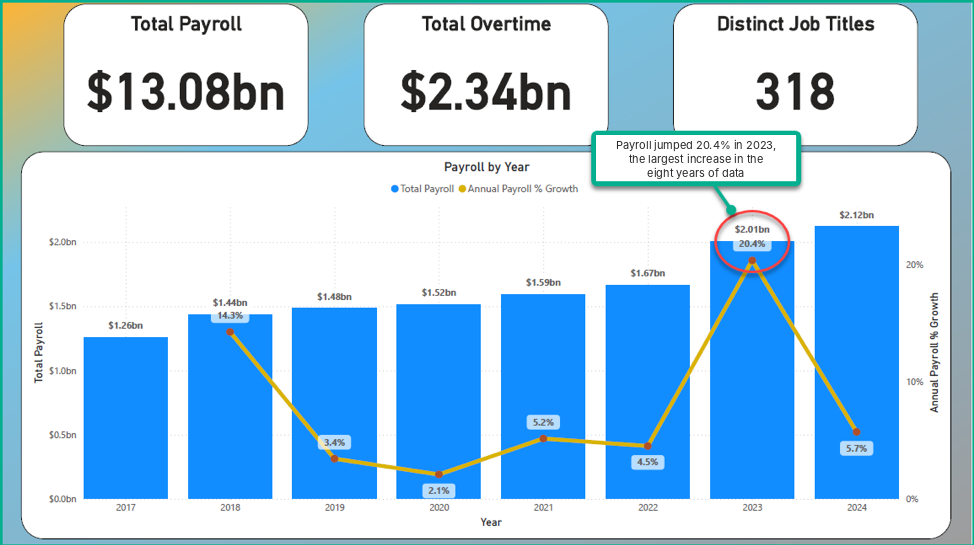
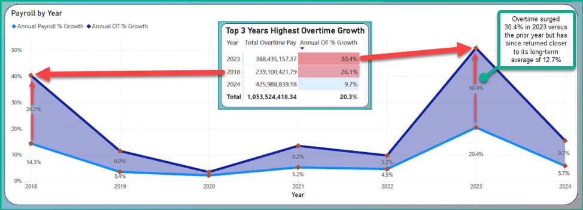
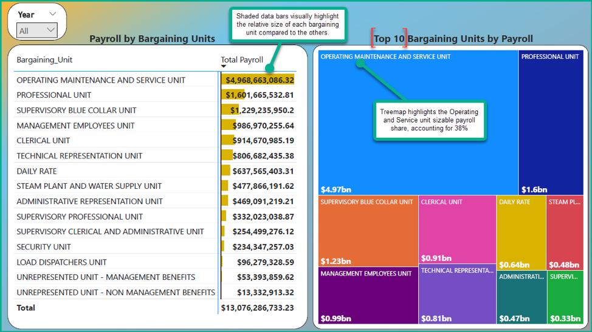
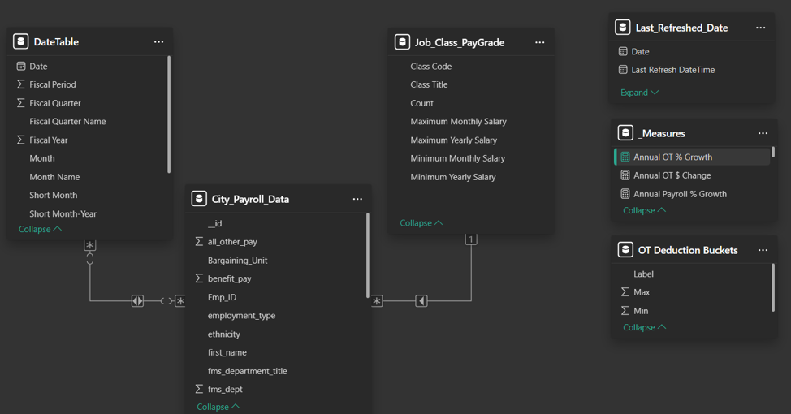
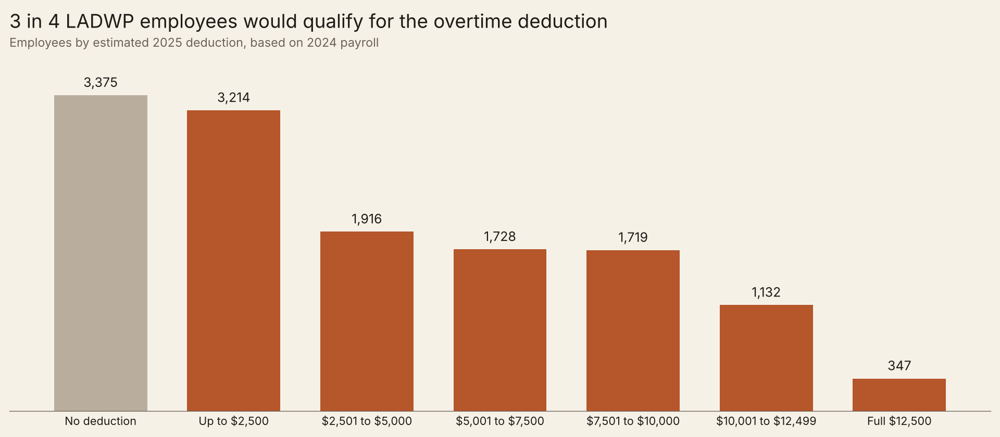

Public Utility Payroll and the Overtime Deduction
Power BI · DAX · PythonQuestion
How has payroll at the Los Angeles Department of Water and Power changed since 2017, and who benefits from the new federal overtime deduction?
Approach
Connected Power BI to the city's live payroll feed (100K+ records, 2017 to 2024) and wrote DAX measures for year over year growth. Then modeled the overtime deduction for each employee in Python using the 2024 data.
Result
Payroll jumped 20.4% in 2023 while overtime jumped 30.4%. Overtime makes up 17.9% of the $13.08 billion paid over eight years. About 3 in 4 employees would qualify for the deduction, saving an estimated $12.8 million in federal tax.
What the payroll data shows
Payroll grew every year, but 2023 stands out. Total pay reached $2.01 billion, up 20.4% from the year before, the largest increase in the eight years of data.

Overtime grew faster than total payroll in six of the seven years. In 2023 payroll rose 20.4% while overtime rose 30.4%. Over the full period, overtime added up to $2.34 billion.

Payroll is concentrated in a few bargaining units. The Operating Maintenance and Service Unit alone accounts for $4.97 billion, about 38% of the total.

How the report is built
The report pulls payroll records straight from the City Controller's open data feed, so it can refresh with new data. The payroll table is linked to a date table and a job class table, and the growth figures come from DAX measures like this one:
Annual Payroll % Growth =
DIVIDE(
[Total_Pay] - CALCULATE([Total_Pay], DATEADD(DateTable[Date].[Date], -1, YEAR)),
CALCULATE([Total_Pay], DATEADD(DateTable[Date].[Date], -1, YEAR))
)
Who benefits from the overtime deduction?
A 2025 federal law lets workers deduct part of their overtime pay from taxable income. I modeled it for every LADWP employee using their 2024 pay. The rule has three steps:
- Only the premium counts. For time and a half, that is one third of overtime pay.
- The deduction is capped at $12,500 for a single filer.
- It shrinks for higher earners: $100 less for every $1,000 of income above $150,000.
In Python, the rule for one employee looks like this:
def deduction(overtime_pay, income):
premium = max(overtime_pay, 0) * PREMIUM_SHARE
capped = min(premium, MAX_DEDUCTION)
# Lose $100 for every $1,000 (or part of $1,000) of income over $150,000
income_over = max(income - PHASE_OUT_START, 0)
reduction = math.ceil(income_over / 1000) * 100
return max(capped - reduction, 0)A deduction lowers taxable income, not the tax bill itself. So for each employee I calculated federal income tax with and without the deduction, using the 2025 brackets, and took the difference.

| Employees in 2024 | 13,431 |
| Qualify for a deduction | 10,056 (75%) |
| Total deductions | $53.1 million |
| Employees at the full $12,500 | 347 |
| Estimated federal tax saved | $12.8 million |
| Average saved per eligible employee | $1,273 |
The estimate assumes single filers with no other income, overtime paid at time and a half, and 2025 tax brackets with the standard deduction. Data: City of Los Angeles Controller, public payroll records.
Checking my own work
My first version of the deduction model, built in Power BI, used a simpler phase out and reported total deductions as savings. When I rebuilt it in Python against the published rules, the answer changed: more employees qualify than I first found, but the tax they save is much smaller than the deduction total.
What I'd do next
The 2023 overtime jump deserves a closer look. The next step would be to flag job titles whose overtime is unusual compared with their own history, so a payroll team knows where to look first.